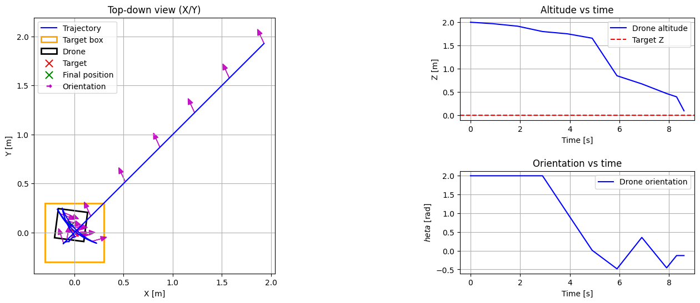

from DroneEnv import DroneLandingEnv
from PIDCon import PIDController
from PID_run import run_pid_simulation
sim_dt = 0.1 # simulation step (10 Hz)
env = DroneLandingEnv(render_mode=None, dt=sim_dt)
controller_dt = 1.0 # controller step (1 Hz)
pid = PIDController(Kp=[2.0,2.0,2.0, 2.0], Ki=[0.1,0.1,0.0,0.2], Kd=[0.0,0.0,0.0,0.0], dt=controller_dt, integral_limit=0.5, z_fixed_speed= -0.2, yaw_2_steps =True)
states, target = run_pid_simulation(env = env, pid = pid, init_mode='fixed', plot=True, init_pos = [2.0,2.0,2.0, 2.0], verbose=True)
error [-2. -2. -2. -2.]
theta_pid 2.0
theta 2.0
for theta 2.0 R is [[-0.41614681 0.90929741 0. ]
[-0.90929741 -0.41614681 0. ]
[ 0. 0. 1. ]]
action [-1.9972599 5.3680491 -0.2 0. ]
theta_env 2.0
for theta 2.0 R.T is [[-0.41614681 -0.90929741 0. ]
[ 0.90929741 -0.41614681 0. ]
[ 0. 0. 1. ]]
action_world [-0.70667606 -0.70667606 -0.03489759 0. ]
error [-1.92933238 -1.92933238 -1.99651027 -2. ]
action [-1.9972599 5.3680491 -0.2 0. ]
theta_env 2.0
for theta 2.0 R.T is [[-0.41614684 -0.90929743 0. ]
[ 0.90929743 -0.41614684 0. ]
[ 0. 0. 1. ]]
action_world [-0.70667607 -0.70667609 -0.03489759 0. ]
error [-1.85866477 -1.85866477 -1.99302051 -2. ]
action [-1.9972599 5.3680491 -0.2 0. ]
theta_env 2.0
for theta 2.0 R.T is [[-0.41614684 -0.90929743 0. ]
[ 0.90929743 -0.41614684 0. ]
[ 0. 0. 1. ]]
action_world [-0.70667607 -0.70667609 -0.03489759 0. ]
error [-1.78799716 -1.78799716 -1.98953075 -2. ]
action [-1.9972599 5.3680491 -0.2 0. ]
theta_env 2.0
for theta 2.0 R.T is [[-0.41614684 -0.90929743 0. ]
[ 0.90929743 -0.41614684 0. ]
[ 0. 0. 1. ]]
action_world [-0.70667607 -0.70667609 -0.03489759 0. ]
error [-1.71732955 -1.71732955 -1.98604099 -2. ]
action [-1.9972599 5.3680491 -0.2 0. ]
theta_env 2.0
for theta 2.0 R.T is [[-0.41614684 -0.90929743 0. ]
[ 0.90929743 -0.41614684 0. ]
[ 0. 0. 1. ]]
action_world [-0.70667607 -0.70667609 -0.03489759 0. ]
error [-1.64666195 -1.64666194 -1.98255123 -2. ]
action [-1.9972599 5.3680491 -0.2 0. ]
theta_env 2.0
for theta 2.0 R.T is [[-0.41614684 -0.90929743 0. ]
[ 0.90929743 -0.41614684 0. ]
[ 0. 0. 1. ]]
action_world [-0.70667607 -0.70667609 -0.03489759 0. ]
error [-1.57599434 -1.57599433 -1.97906147 -2. ]
action [-1.9972599 5.3680491 -0.2 0. ]
theta_env 2.0
for theta 2.0 R.T is [[-0.41614684 -0.90929743 0. ]
[ 0.90929743 -0.41614684 0. ]
[ 0. 0. 1. ]]
action_world [-0.70667607 -0.70667609 -0.03489759 0. ]
error [-1.50532673 -1.50532672 -1.97557172 -2. ]
action [-1.9972599 5.3680491 -0.2 0. ]
theta_env 2.0
for theta 2.0 R.T is [[-0.41614684 -0.90929743 0. ]
[ 0.90929743 -0.41614684 0. ]
[ 0. 0. 1. ]]
action_world [-0.70667607 -0.70667609 -0.03489759 0. ]
error [-1.43465913 -1.43465912 -1.97208196 -2. ]
action [-1.9972599 5.3680491 -0.2 0. ]
theta_env 2.0
for theta 2.0 R.T is [[-0.41614684 -0.90929743 0. ]
[ 0.90929743 -0.41614684 0. ]
[ 0. 0. 1. ]]
action_world [-0.70667607 -0.70667609 -0.03489759 0. ]
error [-1.36399152 -1.36399151 -1.9685922 -2. ]
action [-1.9972599 5.3680491 -0.2 0. ]
theta_env 2.0
for theta 2.0 R.T is [[-0.41614684 -0.90929743 0. ]
[ 0.90929743 -0.41614684 0. ]
[ 0. 0. 1. ]]
action_world [-0.70667607 -0.70667609 -0.03489759 0. ]
error [-1.29332391 -1.2933239 -1.96510244 -2. ]
theta_pid 2.0
theta 2.0
for theta 2.0 R is [[-0.41614684 0.90929743 0. ]
[-0.90929743 -0.41614684 0. ]
[ 0. 0. 1. ]]
action [-1.3002644 3.49472972 -0.2 0. ]
theta_env 2.0
for theta 2.0 R.T is [[-0.41614684 -0.90929743 0. ]
[ 0.90929743 -0.41614684 0. ]
[ 0. 0. 1. ]]
action_world [-0.70609183 -0.70609183 -0.05355981 0. ]
error [-1.22271473 -1.22271472 -1.95974646 -2. ]
action [-1.3002644 3.49472972 -0.2 0. ]
theta_env 2.0
for theta 2.0 R.T is [[-0.41614684 -0.90929743 0. ]
[ 0.90929743 -0.41614684 0. ]
[ 0. 0. 1. ]]
action_world [-0.70609183 -0.70609183 -0.05355981 0. ]
error [-1.15210555 -1.15210553 -1.95439048 -2. ]
action [-1.3002644 3.49472972 -0.2 0. ]
theta_env 2.0
for theta 2.0 R.T is [[-0.41614684 -0.90929743 0. ]
[ 0.90929743 -0.41614684 0. ]
[ 0. 0. 1. ]]
action_world [-0.70609183 -0.70609183 -0.05355981 0. ]
error [-1.08149636 -1.08149635 -1.9490345 -2. ]
action [-1.3002644 3.49472972 -0.2 0. ]
theta_env 2.0
for theta 2.0 R.T is [[-0.41614684 -0.90929743 0. ]
[ 0.90929743 -0.41614684 0. ]
[ 0. 0. 1. ]]
action_world [-0.70609183 -0.70609183 -0.05355981 0. ]
error [-1.01088718 -1.01088717 -1.94367852 -2. ]
action [-1.3002644 3.49472972 -0.2 0. ]
theta_env 2.0
for theta 2.0 R.T is [[-0.41614684 -0.90929743 0. ]
[ 0.90929743 -0.41614684 0. ]
[ 0. 0. 1. ]]
action_world [-0.70609183 -0.70609183 -0.05355981 0. ]
error [-0.940278 -0.94027798 -1.93832253 -2. ]
action [-1.3002644 3.49472972 -0.2 0. ]
theta_env 2.0
for theta 2.0 R.T is [[-0.41614684 -0.90929743 0. ]
[ 0.90929743 -0.41614684 0. ]
[ 0. 0. 1. ]]
action_world [-0.70609183 -0.70609183 -0.05355981 0. ]
error [-0.86966881 -0.8696688 -1.93296655 -2. ]
action [-1.3002644 3.49472972 -0.2 0. ]
theta_env 2.0
for theta 2.0 R.T is [[-0.41614684 -0.90929743 0. ]
[ 0.90929743 -0.41614684 0. ]
[ 0. 0. 1. ]]
action_world [-0.70609183 -0.70609183 -0.05355981 0. ]
error [-0.79905963 -0.79905962 -1.92761057 -2. ]
action [-1.3002644 3.49472972 -0.2 0. ]
theta_env 2.0
for theta 2.0 R.T is [[-0.41614684 -0.90929743 0. ]
[ 0.90929743 -0.41614684 0. ]
[ 0. 0. 1. ]]
action_world [-0.70609183 -0.70609183 -0.05355981 0. ]
error [-0.72845044 -0.72845044 -1.92225459 -2. ]
action [-1.3002644 3.49472972 -0.2 0. ]
theta_env 2.0
for theta 2.0 R.T is [[-0.41614684 -0.90929743 0. ]
[ 0.90929743 -0.41614684 0. ]
[ 0. 0. 1. ]]
action_world [-0.70609183 -0.70609183 -0.05355981 0. ]
error [-0.65784126 -0.65784125 -1.91689861 -2. ]
action [-1.3002644 3.49472972 -0.2 0. ]
theta_env 2.0
for theta 2.0 R.T is [[-0.41614684 -0.90929743 0. ]
[ 0.90929743 -0.41614684 0. ]
[ 0. 0. 1. ]]
action_world [-0.70609183 -0.70609183 -0.05355981 0. ]
error [-0.58723208 -0.58723207 -1.91154263 -2. ]
theta_pid 2.0
theta 2.0
for theta 2.0 R is [[-0.41614684 0.90929743 0. ]
[-0.90929743 -0.41614684 0. ]
[ 0. 0. 1. ]]
action [-0.60384521 1.62295899 -0.2 0. ]
theta_env 2.0
for theta 2.0 R.T is [[-0.41614684 -0.90929743 0. ]
[ 0.90929743 -0.41614684 0. ]
[ 0. 0. 1. ]]
action_world [-0.70243724 -0.70243724 -0.11473382 0. ]
error [-0.51698835 -0.51698835 -1.90006924 -2. ]
action [-0.60384521 1.62295899 -0.2 0. ]
theta_env 2.0
for theta 2.0 R.T is [[-0.41614684 -0.90929743 0. ]
[ 0.90929743 -0.41614684 0. ]
[ 0. 0. 1. ]]
action_world [-0.70243724 -0.70243724 -0.11473382 0. ]
error [-0.44674463 -0.44674462 -1.88859586 -2. ]
action [-0.60384521 1.62295899 -0.2 0. ]
theta_env 2.0
for theta 2.0 R.T is [[-0.41614684 -0.90929743 0. ]
[ 0.90929743 -0.41614684 0. ]
[ 0. 0. 1. ]]
action_world [-0.70243724 -0.70243724 -0.11473382 0. ]
error [-0.37650091 -0.3765009 -1.87712248 -2. ]
action [-0.60384521 1.62295899 -0.2 0. ]
theta_env 2.0
for theta 2.0 R.T is [[-0.41614684 -0.90929743 0. ]
[ 0.90929743 -0.41614684 0. ]
[ 0. 0. 1. ]]
action_world [-0.70243724 -0.70243724 -0.11473382 0. ]
error [-0.30625718 -0.30625718 -1.8656491 -2. ]
action [-0.60384521 1.62295899 -0.2 0. ]
theta_env 2.0
for theta 2.0 R.T is [[-0.41614684 -0.90929743 0. ]
[ 0.90929743 -0.41614684 0. ]
[ 0. 0. 1. ]]
action_world [-0.70243724 -0.70243724 -0.11473382 0. ]
error [-0.23601346 -0.23601345 -1.85417572 -2. ]
action [-0.60384521 1.62295899 -0.2 0. ]
theta_env 2.0
for theta 2.0 R.T is [[-0.41614684 -0.90929743 0. ]
[ 0.90929743 -0.41614684 0. ]
[ 0. 0. 1. ]]
action_world [-0.70243724 -0.70243724 -0.11473382 0. ]
error [-0.16576973 -0.16576973 -1.84270234 -2. ]
action [-0.60384521 1.62295899 -0.2 0. ]
theta_env 2.0
for theta 2.0 R.T is [[-0.41614684 -0.90929743 0. ]
[ 0.90929743 -0.41614684 0. ]
[ 0. 0. 1. ]]
action_world [-0.70243724 -0.70243724 -0.11473382 0. ]
error [-0.09552601 -0.09552601 -1.83122895 -2. ]
action [-0.60384521 1.62295899 -0.2 0. ]
theta_env 2.0
for theta 2.0 R.T is [[-0.41614684 -0.90929743 0. ]
[ 0.90929743 -0.41614684 0. ]
[ 0. 0. 1. ]]
action_world [-0.70243724 -0.70243724 -0.11473382 0. ]
error [-0.02528228 -0.02528228 -1.81975557 -2. ]
action [-0.60384521 1.62295899 -0.2 0. ]
theta_env 2.0
for theta 2.0 R.T is [[-0.41614684 -0.90929743 0. ]
[ 0.90929743 -0.41614684 0. ]
[ 0. 0. 1. ]]
action_world [-0.70243724 -0.70243724 -0.11473382 0. ]
error [ 0.04496144 0.04496144 -1.80828219 -2. ]
action [-0.60384521 1.62295899 -0.2 0. ]
theta_env 2.0
for theta 2.0 R.T is [[-0.41614684 -0.90929743 0. ]
[ 0.90929743 -0.41614684 0. ]
[ 0. 0. 1. ]]
action_world [-0.70243724 -0.70243724 -0.11473382 0. ]
error [ 0.11520517 0.11520516 -1.79680881 -2. ]
theta_pid 2.0
theta 2.0
for theta 2.0 R is [[-0.41614684 0.90929743 0. ]
[-0.90929743 -0.41614684 0. ]
[ 0. 0. 1. ]]
action [ 0.09465081 -0.25439364 -0.2 -4.1 ]
theta_env 2.0
for theta 2.0 R.T is [[-0.41614684 -0.90929743 0. ]
[ 0.90929743 -0.41614684 0. ]
[ 0. 0. 1. ]]
action_world [ 0.04665492 0.04665492 -0.04861638 -0.99663588]
error [ 0.11053967 0.11053967 -1.79194717 -1.90033641]
action [ 0.09465081 -0.25439364 -0.2 -4.1 ]
theta_env 1.9003364116538042
for theta 1.9003364116538042 R.T is [[-0.32360789 -0.94619128 0. ]
[ 0.94619128 -0.32360789 0. ]
[ 0. 0. 1. ]]
action_world [ 0.05106551 0.0417813 -0.04861638 -0.99663588]
error [ 0.10543312 0.10636154 -1.78708553 -1.80067282]
action [ 0.09465081 -0.25439364 -0.2 -4.1 ]
theta_env 1.8006728233076084
for theta 1.8006728233076084 R.T is [[-0.22785727 -0.97369454 0. ]
[ 0.97369454 -0.22785727 0. ]
[ 0. 0. 1. ]]
action_world [ 0.05496929 0.03649302 -0.04861638 -0.99663588]
error [ 0.09993619 0.10271224 -1.78222389 -1.70100923]
action [ 0.09465081 -0.25439364 -0.2 -4.1 ]
theta_env 1.7010092349614125
for theta 1.7010092349614125 R.T is [[-0.12984525 -0.99153427 0. ]
[ 0.99153427 -0.12984525 0. ]
[ 0. 0. 1. ]]
action_world [ 0.05832752 0.03084256 -0.04861638 -0.99663588]
error [ 0.09410344 0.09962798 -1.77736225 -1.60134565]
action [ 0.09465081 -0.25439364 -0.2 -4.1 ]
theta_env 1.6013456466152167
for theta 1.6013456466152167 R.T is [[-0.03054457 -0.99953341 0. ]
[ 0.99953341 -0.03054457 0. ]
[ 0. 0. 1. ]]
action_world [ 0.06110688 0.024886 -0.04861638 -0.99663588]
error [ 0.08799275 0.09713939 -1.77250062 -1.50168206]
action [ 0.09465081 -0.25439364 -0.2 -4.1 ]
theta_env 1.501682058269021
for theta 1.501682058269021 R.T is [[ 0.06905926 -0.99761256 0. ]
[ 0.99761256 0.06905926 0. ]
[ 0. 0. 1. ]]
action_world [ 0.06327977 0.01868245 -0.04861638 -0.99663588]
error [ 0.08166478 0.09527114 -1.76763898 -1.40201847]
action [ 0.09465081 -0.25439364 -0.2 -4.1 ]
theta_env 1.402018469922825
for theta 1.402018469922825 R.T is [[ 0.1679777 -0.9857908 0. ]
[ 0.9857908 0.1679777 0. ]
[ 0. 0. 1. ]]
action_world [ 0.06482463 0.01229349 -0.04861638 -0.99663588]
error [ 0.07518231 0.09404179 -1.76277734 -1.30235488]
action [ 0.09465081 -0.25439364 -0.2 -4.1 ]
theta_env 1.3023548815766293
for theta 1.3023548815766293 R.T is [[ 0.26522902 -0.96418544 0. ]
[ 0.96418544 0.26522902 0. ]
[ 0. 0. 1. ]]
action_world [ 0.06572614 0.00578252 -0.04861638 -0.99663588]
error [ 0.0686097 0.09346354 -1.7579157 -1.20269129]
action [ 0.09465081 -0.25439364 -0.2 -4.1 ]
theta_env 1.2026912932304334
for theta 1.2026912932304334 R.T is [[ 0.35984805 -0.93301092 0. ]
[ 0.93301092 0.35984805 0. ]
[ 0. 0. 1. ]]
action_world [ 6.59753394e-02 -7.85839658e-04 -4.86163846e-02 -9.96635883e-01]
error [ 0.06201217 0.09354212 -1.75305406 -1.1030277 ]
action [ 0.09465081 -0.25439364 -0.2 -4.1 ]
theta_env 1.1030277048842376
for theta 1.1030277048842376 R.T is [[ 0.45089573 -0.89257663 0. ]
[ 0.89257663 0.45089573 0. ]
[ 0. 0. 1. ]]
action_world [ 0.06556976 -0.0073464 -0.04861638 -0.99663588]
error [ 0.05545519 0.09427676 -1.74819242 -1.00336412]
theta_pid 1.0033641165380418
theta 1.0033641165380418
for theta 1.0033641165380418 R is [[ 0.53746845 0.84328386 0. ]
[-0.84328386 0.53746845 0. ]
[ 0. 0. 1. ]]
action [ 0.17641509 0.01997089 -0.2 -2.10672823]
theta_env 1.0033641165380418
for theta 1.0033641165380418 R.T is [[ 0.53746845 -0.84328386 0. ]
[ 0.84328386 0.53746845 0. ]
[ 0. 0. 1. ]]
action_world [ 0.03671837 0.07510788 -0.09417815 -0.99203883]
error [ 0.05178335 0.08676598 -1.73877461 -0.90416023]
action [ 0.17641509 0.01997089 -0.2 -2.10672823]
theta_env 0.9041602333967822
for theta 0.9041602333967822 R.T is [[ 0.61834578 -0.78590617 0. ]
[ 0.78590617 0.61834578 0. ]
[ 0. 0. 1. ]]
action_world [ 0.04397662 0.07110197 -0.09417815 -0.99203883]
error [ 0.04738569 0.07965578 -1.72935679 -0.80495635]
action [ 0.17641509 0.01997089 -0.2 -2.10672823]
theta_env 0.8049563502555226
for theta 0.8049563502555226 R.T is [[ 0.6931427 -0.72080039 0. ]
[ 0.72080039 0.6931427 0. ]
[ 0. 0. 1. ]]
action_world [ 0.05080243 0.06639689 -0.09417815 -0.99203883]
error [ 0.04230545 0.07301609 -1.71993898 -0.70575247]
action [ 0.17641509 0.01997089 -0.2 -2.10672823]
theta_env 0.705752467114263
for theta 0.705752467114263 R.T is [[ 0.76112371 -0.64860673 0. ]
[ 0.64860673 0.76112371 0. ]
[ 0. 0. 1. ]]
action_world [ 0.05712868 0.0610389 -0.09417815 -0.99203883]
error [ 0.03659258 0.0669122 -1.71052116 -0.60654858]
action [ 0.17641509 0.01997089 -0.2 -2.10672823]
theta_env 0.6065485839730034
for theta 0.6065485839730034 R.T is [[ 0.82162034 -0.57003511 0. ]
[ 0.57003511 0.82162034 0. ]
[ 0. 0. 1. ]]
action_world [ 0.06289317 0.05508069 -0.09417815 -0.99203883]
error [ 0.03030326 0.06140413 -1.70110335 -0.5073447 ]
action [ 0.17641509 0.01997089 -0.2 -2.10672823]
theta_env 0.5073447008317438
for theta 0.5073447008317438 R.T is [[ 0.87403769 -0.48585813 0. ]
[ 0.48585813 0.87403769 0. ]
[ 0. 0. 1. ]]
action_world [ 0.0680392 0.04858086 -0.09417815 -0.99203883]
error [ 0.02349934 0.05654604 -1.69168553 -0.40814082]
action [ 0.17641509 0.01997089 -0.2 -2.10672823]
theta_env 0.4081408176904842
for theta 0.4081408176904842 R.T is [[ 0.91786032 -0.39690355 0. ]
[ 0.39690355 0.91786032 0. ]
[ 0. 0. 1. ]]
action_world [ 0.07251618 0.04160332 -0.09417815 -0.99203883]
error [ 0.01624773 0.05238571 -1.68226772 -0.30893693]
action [ 0.17641509 0.01997089 -0.2 -2.10672823]
theta_env 0.30893693454922466
for theta 0.30893693454922466 R.T is [[ 0.95265733 -0.30404607 0. ]
[ 0.30404607 0.95265733 0. ]
[ 0. 0. 1. ]]
action_world [ 0.07628009 0.03421668 -0.09417815 -0.99203883]
error [ 0.00861972 0.04896404 -1.6728499 -0.20973305]
action [ 0.17641509 0.01997089 -0.2 -2.10672823]
theta_env 0.2097330514079651
for theta 0.2097330514079651 R.T is [[ 0.97808653 -0.20819881 0. ]
[ 0.20819881 0.97808653 0. ]
[ 0. 0. 1. ]]
action_world [ 0.07929391 0.02649357 -0.09417815 -0.99203883]
error [ 6.90325565e-04 4.63146872e-02 -1.66343209e+00 -1.10529168e-01]
action [ 0.17641509 0.01997089 -0.2 -2.10672823]
theta_env 0.11052916826670554
for theta 0.11052916826670554 R.T is [[ 0.99389787 -0.11030426 0. ]
[ 0.11030426 0.99389787 0. ]
[ 0. 0. 1. ]]
action_world [ 0.081528 0.01850994 -0.09417815 -0.99203883]
error [-0.00746247 0.04446369 -1.65401427 -0.01132529]
theta_pid 0.011325285125445977
theta 0.011325285125445977
for theta 0.011325285125445977 R is [[ 0.99993587 0.01132504 0. ]
[-0.01132504 0.99993587 0. ]
[ 0. 0. 1. ]]
action [-0.0478736 0.06486828 -0.2 -0.12265057]
theta_env 0.011325285125445977
for theta 0.011325285125445977 R.T is [[ 0.99993587 -0.01132504 0. ]
[ 0.01132504 0.99993587 0. ]
[ 0. 0. 1. ]]
action_world [-0.19592654 0.25928063 -0.80619646 -0.49440228]
error [ 0.01213018 0.01853563 -1.57339463 0.03811494]
action [-0.0478736 0.06486828 -0.2 -0.12265057]
theta_env -0.03811494258935948
for theta -0.03811494258935948 R.T is [[ 0.99927371 0.03810571 0. ]
[-0.03810571 0.99927371 0. ]
[ 0. 0. 1. ]]
action_world [-0.18287347 0.26864652 -0.80619646 -0.49440228]
error [ 0.03041753 -0.00832902 -1.49277498 0.08755517]
action [-0.0478736 0.06486828 -0.2 -0.12265057]
theta_env -0.08755517030416493
for theta -0.08755517030416493 R.T is [[ 0.99616949 0.08744335 0. ]
[-0.08744335 0.99616949 0. ]
[ 0. 0. 1. ]]
action_world [-0.16937347 0.27735588 -0.80619646 -0.49440228]
error [ 0.04735487 -0.03606461 -1.41215534 0.1369954 ]
action [-0.0478736 0.06486828 -0.2 -0.12265057]
theta_env -0.13699539801897037
for theta -0.13699539801897037 R.T is [[ 0.9906308 0.13656728 0. ]
[-0.13656728 0.9906308 0. ]
[ 0. 0. 1. ]]
action_world [-0.15545956 0.28538743 -0.80619646 -0.49440228]
error [ 0.06290083 -0.06460335 -1.33153569 0.18643563]
action [-0.0478736 0.06486828 -0.2 -0.12265057]
theta_env -0.1864356257337758
for theta -0.1864356257337758 R.T is [[ 0.98267116 0.18535747 0. ]
[-0.18535747 0.98267116 0. ]
[ 0. 0. 1. ]]
action_world [-0.14116573 0.29272153 -0.80619646 -0.49440228]
error [ 0.0770174 -0.09387551 -1.25091604 0.23587585]
action [-0.0478736 0.06486828 -0.2 -0.12265057]
theta_env -0.23587585344858125
for theta -0.23587585344858125 R.T is [[ 0.97231003 0.23369468 0. ]
[-0.23369468 0.97231003 0. ]
[ 0. 0. 1. ]]
action_world [-0.12652691 0.29934027 -0.80619646 -0.49440228]
error [ 0.08967009 -0.12380953 -1.1702964 0.28531608]
action [-0.0478736 0.06486828 -0.2 -0.12265057]
theta_env -0.2853160811633867
for theta -0.2853160811633867 R.T is [[ 0.95957274 0.28146077 0. ]
[-0.28146077 0.95957274 0. ]
[ 0. 0. 1. ]]
action_world [-0.11157889 0.30522747 -0.80619646 -0.49440228]
error [ 0.10082798 -0.15433228 -1.08967675 0.33475631]
action [-0.0478736 0.06486828 -0.2 -0.12265057]
theta_env -0.33475630887819213
for theta -0.33475630887819213 R.T is [[ 0.9444904 0.32853902 0. ]
[-0.32853902 0.9444904 0. ]
[ 0. 0. 1. ]]
action_world [-0.09635818 0.31036875 -0.80619646 -0.49440228]
error [ 0.1104638 -0.18536916 -1.00905711 0.38419654]
action [-0.0478736 0.06486828 -0.2 -0.12265057]
theta_env -0.3841965365929976
for theta -0.3841965365929976 R.T is [[ 0.92709988 0.37481437 0. ]
[-0.37481437 0.92709988 0. ]
[ 0. 0. 1. ]]
action_world [-0.08090198 0.31475153 -0.80619646 -0.49440228]
error [ 0.118554 -0.21684431 -0.92843746 0.43363676]
action [-0.0478736 0.06486828 -0.2 -0.12265057]
theta_env -0.433636764307803
for theta -0.433636764307803 R.T is [[ 0.90744368 0.42017373 0. ]
[-0.42017373 0.90744368 0. ]
[ 0. 0. 1. ]]
action_world [-0.06524808 0.31836511 -0.80619646 -0.49440228]
error [ 0.12507881 -0.24868082 -0.84781781 0.48307699]
theta_pid -0.48307699202260845
theta -0.48307699202260845
for theta -0.48307699202260845 R is [[ 0.88556984 -0.46450626 0. ]
[ 0.46450626 0.88556984 0. ]
[ 0. 0. 1. ]]
action [ 0.45679081 -0.37789562 -0.2 0.96276938]
theta_env -0.48307699202260845
for theta -0.48307699202260845 R.T is [[ 0.88556984 0.46450626 0. ]
[-0.46450626 0.88556984 0. ]
[ 0. 0. 1. ]]
action_world [ 0.19942793 -0.47624983 -0.17418406 0.83849539]
error [ 0.10513601 -0.20105584 -0.83039941 0.39922745]
action [ 0.45679081 -0.37789562 -0.2 0.96276938]
theta_env -0.3992274534463832
for theta -0.3992274534463832 R.T is [[ 0.92136156 0.38870666 0. ]
[-0.38870666 0.92136156 0. ]
[ 0. 0. 1. ]]
action_world [ 0.23861383 -0.45787427 -0.17418406 0.83849539]
error [ 0.08127463 -0.15526841 -0.812981 0.31537791]
action [ 0.45679081 -0.37789562 -0.2 0.96276938]
theta_env -0.315377914870158
for theta -0.315377914870158 R.T is [[ 0.95067923 0.31017577 0. ]
[-0.31017577 0.95067923 0. ]
[ 0. 0. 1. ]]
action_world [ 0.27612308 -0.43628139 -0.17418406 0.83849539]
error [ 0.05366232 -0.11164027 -0.7955626 0.23152838]
action [ 0.45679081 -0.37789562 -0.2 0.96276938]
theta_env -0.23152837629393277
for theta -0.23152837629393277 R.T is [[ 0.97331682 0.22946539 0. ]
[-0.22946539 0.97331682 0. ]
[ 0. 0. 1. ]]
action_world [ 0.31169211 -0.41162292 -0.17418406 0.83849539]
error [ 0.02249311 -0.07047798 -0.77814419 0.14767884]
action [ 0.45679081 -0.37789562 -0.2 0.96276938]
theta_env -0.14767883771770757
for theta -0.14767883771770757 R.T is [[ 0.98911528 0.14714263 0. ]
[-0.14714263 0.98911528 0. ]
[ 0. 0. 1. ]]
action_world [ 0.345071 -0.38407214 -0.17418406 0.83849539]
error [-0.01201399 -0.03207076 -0.76072579 0.0638293 ]
action [ 0.45679081 -0.37789562 -0.2 0.96276938]
theta_env -0.06382929914148236
for theta -0.06382929914148236 R.T is [[ 0.9979636 0.06378597 0. ]
[-0.06378597 0.9979636 0. ]
[ 0. 0. 1. ]]
action_world [ 0.37602521 -0.35382262 -0.17418406 0.83849539]
error [-0.04961651 0.0033115 -0.74330738 -0.02002024]
action [ 0.45679081 -0.37789562 -0.2 0.96276938]
theta_env 0.020020239434742848
for theta 0.020020239434742848 R.T is [[ 0.9997996 -0.0200189 0. ]
[ 0.0200189 0.9997996 0. ]
[ 0. 0. 1. ]]
action_world [ 0.40433722 -0.32108692 -0.17418406 0.83849539]
error [-0.09005023 0.03542019 -0.72588897 -0.10386978]
action [ 0.45679081 -0.37789562 -0.2 0.96276938]
theta_env 0.10386977801096806
for theta 0.10386977801096806 R.T is [[ 0.99461038 -0.1036831 0. ]
[ 0.1036831 0.99461038 0. ]
[ 0. 0. 1. ]]
action_world [ 0.42980811 -0.28609507 -0.17418406 0.83849539]
error [-0.13303104 0.0640297 -0.70847057 -0.18771932]
action [ 0.45679081 -0.37789562 -0.2 0.96276938]
theta_env 0.18771931658719326
for theta 0.18771931658719326 R.T is [[ 0.98243241 -0.18661876 0. ]
[ 0.18661876 0.98243241 0. ]
[ 0. 0. 1. ]]
action_world [ 0.4522589 -0.24909293 -0.17418406 0.83849539]
error [-0.17825693 0.08893899 -0.69105216 -0.27156886]
action [ 0.45679081 -0.37789562 -0.2 0.96276938]
theta_env 0.27156885516341844
for theta 0.27156885516341844 R.T is [[ 0.96335125 -0.26824312 0. ]
[ 0.26824312 0.96335125 0. ]
[ 0. 0. 1. ]]
action_world [ 0.47153184 -0.21034051 -0.17418406 0.83849539]
error [-0.22541012 0.10997304 -0.67363376 -0.35541839]
theta_pid 0.3554183937396437
theta 0.3554183937396437
for theta 0.3554183937396437 R is [[ 0.93750098 0.34798264 0. ]
[-0.34798264 0.93750098 0. ]
[ 0. 0. 1. ]]
action [-0.40047735 0.34221727 -0.2 -0.78530507]
theta_env 0.3554183937396437
for theta 0.3554183937396437 R.T is [[ 0.93750098 -0.34798264 0. ]
[ 0.34798264 0.93750098 0. ]
[ 0. 0. 1. ]]
action_world [-0.51165371 0.18775212 -0.20692375 -0.81249135]
error [-0.17424474 0.09119783 -0.65294138 -0.27416926]
action [-0.40047735 0.34221727 -0.2 -0.78530507]
theta_env 0.2741692591627025
for theta 0.2741692591627025 R.T is [[ 0.96265045 -0.27074732 0. ]
[ 0.27074732 0.96265045 0. ]
[ 0. 0. 1. ]]
action_world [-0.49472789 0.22865845 -0.20692375 -0.81249135]
error [-0.12477196 0.06833198 -0.63224901 -0.19292012]
action [-0.40047735 0.34221727 -0.2 -0.78530507]
theta_env 0.19292012458576138
for theta 0.19292012458576138 R.T is [[ 0.98144856 -0.19172566 0. ]
[ 0.19172566 0.98144856 0. ]
[ 0. 0. 1. ]]
action_world [-0.47453797 0.26805613 -0.20692375 -0.81249135]
error [-0.07731816 0.04152637 -0.61155663 -0.11167099]
action [-0.40047735 0.34221727 -0.2 -0.78530507]
theta_env 0.11167099000882025
for theta 0.11167099000882025 R.T is [[ 0.99377127 -0.11143904 0. ]
[ 0.11143904 0.99377127 0. ]
[ 0. 0. 1. ]]
action_world [-0.45121715 0.30568523 -0.20692375 -0.81249135]
error [-0.03219644 0.01095785 -0.59086426 -0.03042186]
action [-0.40047735 0.34221727 -0.2 -0.78530507]
theta_env 0.030421855431879113
for theta 0.030421855431879113 R.T is [[ 0.99953729 -0.03041716 0. ]
[ 0.03041716 0.99953729 0. ]
[ 0. 0. 1. ]]
action_world [-0.42491928 0.34129749 -0.20692375 -0.81249135]
error [ 0.01029549 -0.0231719 -0.57017188 0.05082728]
action [-0.40047735 0.34221727 -0.2 -0.78530507]
theta_env -0.05082727914506202
for theta -0.05082727914506202 R.T is [[ 0.99870857 0.0508054 0. ]
[-0.0508054 0.99870857 0. ]
[ 0. 0. 1. ]]
action_world [-0.39581789 0.37465794 -0.20692375 -0.81249135]
error [ 0.04987727 -0.0606377 -0.54947951 0.13207641]
action [-0.40047735 0.34221727 -0.2 -0.78530507]
theta_env -0.13207641372200316
for theta -0.13207641372200316 R.T is [[ 0.99129058 0.13169275 0. ]
[-0.13169275 0.99129058 0. ]
[ 0. 0. 1. ]]
action_world [-0.36410498 0.40554647 -0.20692375 -0.81249135]
error [ 0.08628777 -0.10119234 -0.52878713 0.21332555]
action [-0.40047735 0.34221727 -0.2 -0.78530507]
theta_env -0.2133255482989443
for theta -0.2133255482989443 R.T is [[ 0.97733226 0.21171123 0. ]
[-0.21171123 0.97733226 0. ]
[ 0. 0. 1. ]]
action_world [-0.32998978 0.43375929 -0.20692375 -0.81249135]
error [ 0.11928675 -0.14456827 -0.50809476 0.29457468]
action [-0.40047735 0.34221727 -0.2 -0.78530507]
theta_env -0.2945746828758854
for theta -0.2945746828758854 R.T is [[ 0.95692571 0.29033288 0. ]
[-0.29033288 0.95692571 0. ]
[ 0. 0. 1. ]]
action_world [-0.29369737 0.45911026 -0.20692375 -0.81249135]
error [ 0.14865649 -0.1904793 -0.48740238 0.37582382]
action [-0.40047735 0.34221727 -0.2 -0.78530507]
theta_env -0.37582381745282656
for theta -0.37582381745282656 R.T is [[ 0.93020556 0.36703897 0. ]
[-0.36703897 0.93020556 0. ]
[ 0. 0. 1. ]]
action_world [-0.25546721 0.48143211 -0.20692375 -0.81249135]
error [ 0.17420321 -0.23862251 -0.46671001 0.45707295]
theta_pid -0.4570729520297677
theta -0.4570729520297677
for theta -0.4570729520297677 R is [[ 0.89734811 -0.44132342 0. ]
[ 0.44132342 0.89734811 0. ]
[ 0. 0. 1. ]]
action [ 0.52173342 -0.33096614 -0.2 0.93109221]
theta_env -0.4570729520297677
for theta -0.4570729520297677 R.T is [[ 0.89734811 0.44132342 0. ]
[-0.44132342 0.89734811 0. ]
[ 0. 0. 1. ]]
action_world [ 0.28375057 -0.46445157 -0.17618054 0.82020166]
error [ 0.14582815 -0.19217735 -0.44909195 0.37505279]
action [ 0.52173342 -0.33096614 -0.2 0.93109221]
theta_env -0.37505278555324584
for theta -0.37505278555324584 R.T is [[ 0.93048829 0.36632165 0. ]
[-0.36632165 0.93048829 0. ]
[ 0. 0. 1. ]]
action_world [ 0.32084836 -0.43964301 -0.17618054 0.82020166]
error [ 0.11374332 -0.14821305 -0.4314739 0.29303262]
action [ 0.52173342 -0.33096614 -0.2 0.93109221]
theta_env -0.29303261907672395
for theta -0.29303261907672395 R.T is [[ 0.95737229 0.28885689 0. ]
[-0.28885689 0.95737229 0. ]
[ 0. 0. 1. ]]
action_world [ 0.35578892 -0.41187849 -0.17618054 0.82020166]
error [ 0.07816442 -0.1070252 -0.41385585 0.21101245]
action [ 0.52173342 -0.33096614 -0.2 0.93109221]
theta_env -0.21101245260020207
for theta -0.21101245260020207 R.T is [[ 0.97781936 0.20945 0. ]
[-0.20945 0.97781936 0. ]
[ 0. 0. 1. ]]
action_world [ 0.38833732 -0.38134469 -0.17618054 0.82020166]
error [ 0.03933069 -0.06889073 -0.39623779 0.12899229]
action [ 0.52173342 -0.33096614 -0.2 0.93109221]
theta_env -0.1289922861236802
for theta -0.1289922861236802 R.T is [[ 0.99169202 0.12863487 0. ]
[-0.12863487 0.99169202 0. ]
[ 0. 0. 1. ]]
action_world [ 0.16612412 -0.01019523 -1. 0. ]
error [ 0.02271828 -0.06787121 -0.29623779 0.12899229]
action [ 0.52173342 -0.33096614 -0.2 0.93109221]
theta_env -0.1289922861236802
for theta -0.1289922861236802 R.T is [[ 0.99169202 0.12863487 0. ]
[-0.12863487 0.99169202 0. ]
[ 0. 0. 1. ]]
action_world [-0.03368439 0.04073836 -1. 0. ]
error [ 0.02608672 -0.07194505 -0.19623779 0.12899229]
action [ 0.52173342 -0.33096614 -0.2 0.93109221]
theta_env -0.1289922861236802
for theta -0.1289922861236802 R.T is [[ 0.99169202 0.12863487 0. ]
[-0.12863487 0.99169202 0. ]
[ 0. 0. 1. ]]
action_world [-0.08499715 0.03597259 -1. 0. ]

import numpy as np
R= np.array([[-0.41614681 , 0.90929741 , 0. ],
[-0.90929741, -0.41614681 , 0. ],
[ 0. , 0. , 1. ]])
R
array([[-0.41614681, 0.90929741, 0. ],
[-0.90929741, -0.41614681, 0. ],
[ 0. , 0. , 1. ]])
R.T@R
array([[0.99999995, 0. , 0. ],
[0. , 0.99999995, 0. ],
[0. , 0. , 1. ]])
error = np.array([-2., -2., -2., -2.])
error
array([-2., -2., -2., -2.])
theta = 2.0
print(error)
c, s = np.cos(theta), np.sin(theta)
R = np.array([
[c, s, 0],
[-s, c, 0],
[0, 0, 1]
]) # world-to-body rotation (transpose of body-to-world)
print(R)
body_output = np.zeros_like(error)
body_output[:3] = R @ error[:3] # rotate linear part
body_output[3] = error[3] # yaw rate unchanged
print(body_output )
[-2. -2. -2. -2.]
[[-0.41614684 0.90929743 0. ]
[-0.90929743 -0.41614684 0. ]
[ 0. 0. 1. ]]
[-0.98630118 2.65088853 -2. -2. ]
body_output
array([-0.98630118, 2.65088853, -2. , -2. ])